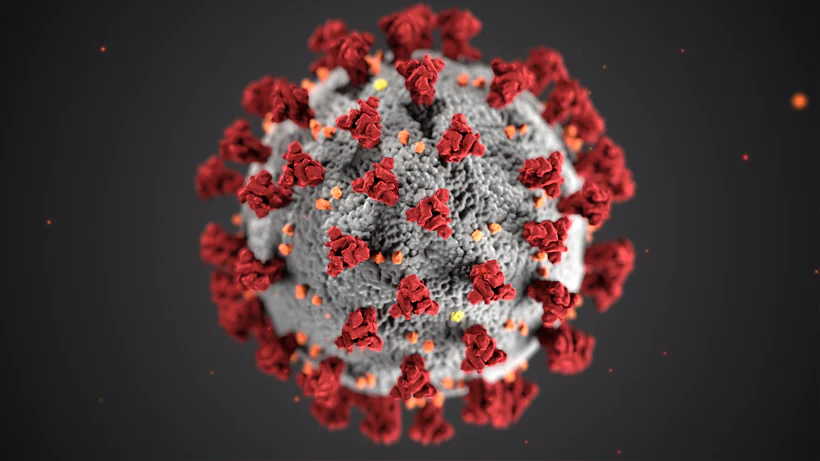

01
01Empathy first
The chart is a file. The person holding it is not.
EST. 2001 · SALEM · OPEN 24/7
One stubborn idea — that a hospital should feel like home — grew into 240+ specialists across six states, still running on the warmth of a neighbourhood clinic.


 WARD 001
WARD 001

“Empathy first, precision always — the house rule since day one.”
Dr. E. Stackly · Founder
 NIGHT SHIFT
NIGHT SHIFT
Six beds, one promise. Scroll the recording.
In 2001, two resident doctors grew tired of treating file numbers instead of faces. So they opened a single ward on Wells Ave — six beds and one bold promise: no one gets treated like a chart.
That promise became a system. Today Stackly spans six states with 240+ specialists, yet every room still carries the hum of a neighbourhood clinic. We kept the warmth and added the science.
Dr. Mira Chen, co-founder
 EV-01
EV-01 EV-02
EV-02 EV-03
EV-03Written in 2001, pinned to every floor, signed by every hire.
 P.01
P.01DOSE: APPLY DAILY
01The chart is a file. The person holding it is not.

02Measure twice, dose once, double-check anyway.
We tell the truth first, then we hold your hand.
04Technology runs the machines. We run the conversations.
05When a case is cruel, the team bends — never breaks.


WARD ONE — the day wakes up.

Co-founder. Runs the hospital the way she ran the first ward — with rounds every morning.
24 yrs at Stackly
Led 2,300+ surgeries and still knocks before entering a patient's room. Old school, new heart.
18 yrs at Stackly
Patents data pipelines with one hand, samples school cafeteria lunches with the other.
11 yrs at Stackly
Keeps 4,000 smiling faces on the roster — patients and staff. A diplomat in a lab coat.
9 yrs at StacklyEach one stood on the shoulders of the one before.

Two residents stake everything on a six-bed ward and a no-charts-ever rule.
Read the log
Stackly software links every ward so a patient's story travels with them.
Read the log
The Stackly app ships — bookings, results and refills, all from a couch.
Read the log
A fully verified record — the promise, kept loud enough to audit.
Read the logHover the list to preview. Click a stop to open the viewfinder.


Perioperative & clinical excellence
2014 — 2026
Healthcare IT award, three years running
2022 — 2026Zero-preventable-harm verified record
2018 — 2026Community care by neighbourhood vote
2020 — 2026Three people, three encounters, one hospital.

“The nurse remembered my name — and my dog's name. That was the whole hospital in one sentence.”

Come and sit with us
400+ open roles — from surgeons to software. Bring your heart, we'll handle the rest.